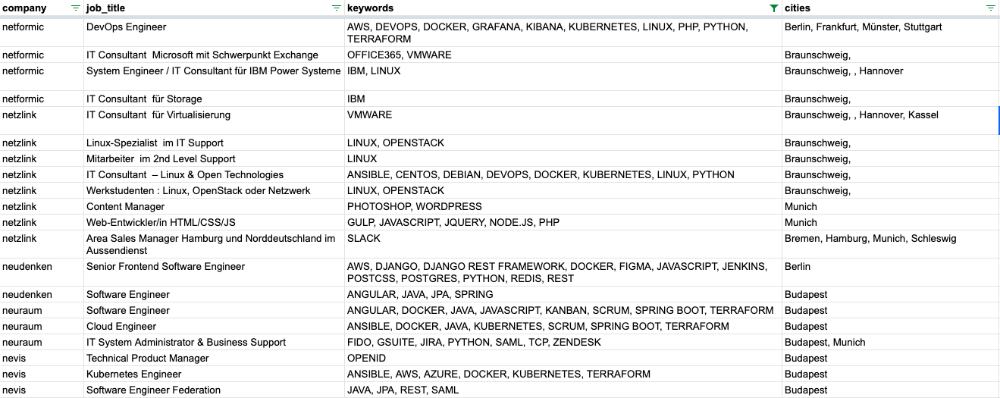

Datenbeschreibung
Unser Datensatz enthält aktuelle Jobanzeigen von über 2000 Tech-Firmen mit einer Analyse der Inhalte.
In der Analyse werden die genutzen Programmiersprachen, Technologien und Standorte/Einsatzorte
herausgefiltert.
Der Schwerpunkte unserer Daten liegt auf IT-Firmen aktiv in Europa.
Datensatzbeispiel



Nutzen unserer Daten
Unsere Daten zeigen verwendete Programmiersprachen und Frameworks sowie aktuelle Stellenausschreibungen von über 2000 Unternehmen.
Mit diesen Daten können Sie Sales-Aktivitäten optimieren, neue Kunden aquirieren und technologische Trends voraussehen.
Die Daten sind besonders nützlich für:
- Vertriebsabteilungen von IT-Beratungen und IT-Outsourcing Firmen
- Personalvermittler und Headhunter
- Tech-Bloggers
Kaufpreis der Daten
Den neuesten Datensatz können Sie für 500€ erwerben.
Die Daten werden alle 2 Wochen aktualiert.
Wir machen Ihnen gerne ein individuelles Angebot, falls sie unsere Daten regelmäßig erhalten möchten.
Kontakt
Sind Sie daran interessiert unseren Datensatz zu erwerben?
Für weitere Informationen können Sie uns gerne kontaktieren:
FAQ
Von welchen Firmen werden Daten gesammelt?
Wir sammeln mit einer selbst entwickelten Software Daten von Tech-Firmen.
Als "Tech-Firmen" bezeichnen wir jene Unternehmen, welche den Bedarf an Sotware-Entwickler haben.
Von wie vielen Firmen sammelt unsere Software Daten?
Aktuell werden knapp über 2000 Unternehmen analysiert.
In welchem Format erhalte ich die Daten?
Wir schicken die Daten als CSV-Datei.
Wie aktuell sind die Daten?
Im Zyklus von zwei Wochen aktualieren wir die Daten.
Sind die gesammelten Daten legal?
Ja, die Daten werden von den öffentlichen Firmenwebseiten ausgelesen.
Kann ich die Daten auch selber sammeln?
Ja, nürlich geht das. Es wird höchstwahrscheinlich mehrere Wochen manueller Arbeit in Anspruch nehmen die Daten zu sammeln und aufzuarbeiten.
Kann ich den Datensatz in unterschiedlichen Formaten und ggf. mit zusätzlichen Daten erhalten?
Kontaktieren Sie uns und wir versuchen den Datensatz nach Ihren Vorstellungen anzupassen.
Ist es möglich eine Probe der Daten zur Nutzenvalidierung zu erhalten?
Ja, bitte kontaktieren Sie uns.
Über uns
Wir sind zwei Entwickler die in der Freizeit verschiedene Softwareprodukte planen und entwickeln.
Eines der Produkte ist die hier beschriebene Software,
welche Tausende von Firmenwebseiten analysiert.
Wir sind kein Unternehmen.
Alexander Pöhlmann Otari Glonti